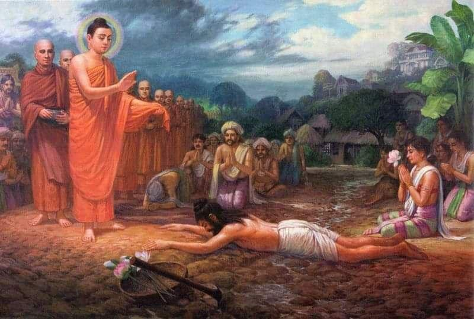

The first picture is a kind of prequel, the actions take place long before Siddhartha was born, when a man named Sumedha set out to become a Bodhisattva, that is, one who, over an unimaginably long period of time, improves the qualities in himself that allow him to become a Buddha in his last birth, who independently awakens at four truths and teaches them unsurpassedly to people and devas.
The picture depicts Buddha Dipankara, accompanied by four hundred thousand Arhats, heading to the city of Ramma at the invitation of the townspeople to accept gifts, as well as the brahman Sumedha taking bodhisattva vows while prostrating before the Buddha.
Buddha Dipankara (lit. He who makes oil lamps, or Giver of light of lamps) - Tathagatta who lived four immeasurable kalpas and one hundred thousand kalpas ago. The first Buddha of the twenty-four Tathagatas of the past, which Buddha Shakyamuni told his disciples about. During the time of Buddha Dipankara, the future Buddha Shakyamuni was reincarnated as the brahman Sumedha. One day he thought about the vicissitudes of reincarnation, about suffering, about old age and illness.
This is how his meditation is described in the Buddhist chronicle:
One day he went up to the upper terrace of his mansion and, sitting alone, the following thoughts arose in him:
“Unfortunate is birth into a new existence; so is the destruction of the body; It is also unfortunate to die in error, oppressed and suppressed by old age. Subject to birth, old age and disease, I will seek Nibbana, where old age, death and fear will disappear.
It would be wonderful if I could leave this body of mine without paying any attention to it, since it is full of putrefactive substances such as urine, excrement, pus, blood, bile, mucus, saliva, etc.
Surely there must be a path leading to the cessation of all this, a path to Nibbana. Otherwise it can not be. I will seek this path to free myself from the shackles of existence.
For example, just as when there is suffering ( dukkha ), there is also happiness ( sukha ) in this world ; also in this case, when there is a circle of existences, which is the arising of suffering, there must also be Nibbana, which is the cessation of suffering.
Just as when there is heat, there is also cold; even in this case, when there are three fires of craving, aversion and delusion, there must also be Nibbana, that is, the extinction of these three fires.
After these thoughts came to his mind, he continued to think deeply:
“For example, a person who has fallen into a pit of sewage or is stained with mud sees from afar a clean pond decorated with five types of lotuses. If, despite the fact that he saw it, he does not find the right path to the pond, then it is not the fault of the pond, but the person himself. In the same way, there is a big pond of immortal Nibbana where one can wash away one's mental defilements, and if one does not seek that big pond of Nibbana, then it is not Nibbana's fault.
Again, if a person is surrounded by enemies and does not try to escape, although there is a way for him to escape, then it is not the fault of the path. In the same way, if a person, besieged by enemies in the form of mental defilements, does not want to flee, although there is clearly a high road to the golden city of Nibbana, where one is protected from enemies in the form of mental defilements, it is not the fault of that high road.
Again, if a person fell ill with a disease and did not want to be treated, although there is a good doctor, the doctor is not to blame. In the same way, if someone suffers painfully from diseases of mental defilements and does not seek a master to cure them, although there is one who is skilled in eliminating these mental defilements, then the master is not to blame.”
Reflecting on renunciation in the light of these comparisons, the wise Sumedha again came up with the thought: “Having accumulated so much wealth, my father, grandfather and my other relatives from seven generations could not use even one coin when they passed away. But I need to find a way to take this wealth with me on the journey to Nibban.”
It's worth commenting on the last sentence here:
He, of course, could not take his wealth with him. But here Sumedha is referring to the beneficial results that can be obtained as a result of his good deeds associated with generous giving.
He then approached the king and said: “Your Majesty, since my mind is obsessed with great fear of the dangers and sufferings arising from such things as birth, old age, etc., I am going to leave home life and become a hermit. I have wealth worth many millions. Please take them."
“I don’t need your wealth young man. But you can do with it as you wish,” replied the king. “Okay, your Majesty,” said the wise Sumedha and, to the beat of a mighty drum, he proclaimed this throughout the city of Amaravati: “Let those who need my wealth come and take it away.” And he distributed his wealth, distributing great alms, to everyone, without distinction of status and regardless of whether they were beggars or not.
Having thus performed a great act of generosity, the wise Sumedha renounced the world.
As it is written in the Mahavamsa, on the instructions of Sakka (the lord of the Devas) himself, a suitable dwelling for practice was prepared for him.
This dwelling could promote tranquility of the mind, which could lead to insight ( vipassana ) into the true nature of things, their impermanence, suffering and impersonality.
Having become an ascetic, Sumedho, walking back and forth along a path 60 cubits long, looked at himself in his new hermit’s robe and rejoiced at the thought:
“My heart's desire has been completely fulfilled. Indeed, my ascetic life is wonderful. The ascetic life was praised by all the sages such as Buddha and Pacheka Buddha. The shackles of family life were abandoned. I have safely left the sphere of worldly pleasures. I entered the noble life of an ascetic. I will cultivate and practice holy living. And I will try to benefit from these practices.”
In the evening, Sumedho entered the hut and, lying on a wooden plank next to a reed couch, used his clothes as a blanket and fell asleep. Waking up early in the morning, he again thought about the reasons and circumstances of his renunciation:
“Seeing the shortcomings of family life and renouncing incomparable wealth and unlimited funds and retinue, I entered the forest and became an ascetic, wanting to seek merit that would free me from the networks of sensuality. From now on, I must not be careless.
And apparently at this moment, perhaps he thought about three categories of wrong thoughts.
There are three categories of wrong thoughts, namely:
thoughts based on craving ( kama-vitakka ), directed towards sensual pleasures;
thought based on ill will ( vyapada-vitakka ), which is aimed at killing, destruction;
thought based on cruelty ( vihimsa-vitakka ), aimed at causing harm and violence to other living beings.
These thoughts can be compared to wild flies that feed on those who are careless and abandon the practice of mental detachment from delusions and physical detachment from sense pleasures.
As you may have already guessed and remembered, these three types of bad thinking are the opposite of the three types of good thinking “samakappa itself”, which is the second point of the Noble Eightfold Path, let me remind them all:
Samma dithi - right view
Samma sankappa - right thinking (or how right aspiration is often translated)
Samma vaca - correct speech
Samma kammanta - right action
Samma ajiva - right livelihood
Samma Vayama - Right Effort
Samma sati - right mindfulness
Samma Samdhi - Right Concentration
For now we will not dwell on them in detail, but will continue the story.
Thinking this way, Sumedho said to himself, now is the time for me to fully devote myself to the practice of non-attachment ( paviveka ).
True, seeing the shortcomings of family life that hinder, hinder and harm serious practices, I renounced the world. This leaf hut is truly amazing. This perfectly leveled land is bright yellow, like a ripe bael fruit. The walls are silvery white. The leaves on the roof are a beautiful red color, like pigeon's foot. The sofa is made of reeds and decorated with patterns of a colorful bedspread. The home is very comfortable to live in. I do not think that the luxury of my former worldly abode can surpass the comfort provided by this hut.”
Thinking in this way, he recognized eight disadvantages of a leaf hut and ten advantages of a tree base. Consequently, that same day he left the hut and went to the foot of the trees.
The next morning he entered the neighboring village for alms. The villagers made great efforts to offer him delicious food. Having finished his meal, he returned to the forest and sat down, thinking:
“I became an ascetic not because I lack food. Delicious food and delicacies tend to enhance pride and arrogance. There is no end to the troubles that arise from the need to maintain life on such food. It would be good if I abstained from food prepared from cultivated grains and ate only the fruits that fall from the trees.”
From that moment on, he ate only fruits that fell from the trees. Without lying down at all, he made strenuous efforts to meditate continuously in only three postures: sitting, standing and walking, and at the end of seven days he had achieved eight achievements ( samapatti or jhanic achievements ) and five beyond knowledge ( abhinnya - beyond natural powers).
During this period, the fame of the Victor in Truth, Buddha Dipankar, began to spread throughout the world.
Buddha Dipankara stayed in the city of Rammavati in the Sudassana monastery.
But Sumedha was unaware of these wonderful events as he was then completely absorbed in the bliss of absorption ( jhana ).
Meanwhile, the people of Rammavati were carefully preparing for the great almsgiving ( asadisha-maha-dana ). The city streets were tamed and put in order.
When all the necessary preparations were made in the city, the townspeople began to repair the road along which the Buddha was supposed to enter the city. They filled in holes and cracks caused by floods with earth and leveled the uneven muddy soil. The road was also sprinkled with pearly white sand and strewn with flowers and rice flakes.
At this time, the hermit Sumedha rose into the air from his abode and, traveling through the air, saw the inhabitants of Rammavati cheerfully engaged in repairing roads. Wondering what was happening below, he hovered in a suitable place and while people watched in utter amazement as he hung in the air, he asked:
“You are repairing the road with such pleasure and enthusiasm. Who are you repairing it for?
Then the people, having come to their senses a little, answered:
“Venerable Sumedha, the incomparable Buddha Dipankara appeared in this world, having conquered the five types of death ( mara ). He is the supreme lord of the whole world. We are repairing the road for his visit.”
From this conversation it can be noted that Buddha Dipankara appeared long after Sumedha attained the jhanas and beyond knowledge. Sumedha was not aware of Dipankara's conception, birth, becoming Buddha and his first sermon, because he wandered only in the forests and skies, completely absorbed in the bliss of absorption, not interested in any events of the human world. It was only when he traveled by air and saw the people of Rammavati repairing and cleaning the roads that he came down to earth to ask what was happening. This says that Sumedha was about several thousand years old at that time, since the life span when Buddha Dipankara appeared was 100,000 years.
Sumedha was filled with joy when he heard the word “Buddha” spoken by the people of Rammavati. He experienced such great spiritual happiness that he endlessly repeated the word “Buddha”, as he could not contain the strong joy that arose in him.
Standing at the place where he had descended, Sumedha was filled with happiness and also moved ( samvega - a special sense of urgency and urgency ). He thought like this: “I will sow excellent seeds of merit into fertile soil for the cultivation of good deeds thanks to Buddha Dipankara. Indeed, it is rare and difficult to witness the appearance of Buddha. This happy moment has arrived. And I won’t let such rare luck pass me by.”
Thinking this way, he turned to the people: “People, if you are preparing the road for the Buddha’s visit, allocate a section of the road for me too. I would also like to take part in this work.” “Okay,” said the people, and since they had just witnessed his flight in the sky and thinking that he was most likely a person with enormous superpowers, they allocated him a large, swampy and very uneven piece of land that would be difficult to correct. .
Then Sumedha, with joy in his heart, thought of the 9 qualities of Buddha:
Buddha is one who is worthy of the epithet “ Araha” because he has completely abandoned all obscurations along with their inherent inclinations. In all his bodily actions, speech and mental activities, awareness is always present, manifesting itself along with wisdom. His moral conduct is impeccable, and he has completely given up greed, aversion, embarrassment and confusion, conceit, vanity and wrong views.
He is Sammasambuddha perfect, self-awakened. One who is endowed with the knowledge of all dhammas (sabbaññuta nāna).
He is the one who is endowed with protective powers (vijjãkarana sampanna) of knowledge, vision and superpowers. And impeccable behavior.
The Buddha's compassion for all beings is limitless. With the eye of wisdom he always seeks those who need to be liberated from the circle of repeated births (samsãra) and those who have the potential for this. Being the most diligent and hardworking of everyone in this world. Therefore, he is known as " Sugato" (Good Walking). He always comes bringing with him only goodness and liberation from suffering.
He knows everything about the world of people, devas , brahmas and what moves creatures there and determines their thoughts and aspirations. His insight is unsurpassed, he knows everything about the degree of their maturity and immaturity, natural and intellectual abilities, habits, predispositions and desires. He is unsurpassed in his knowledge of the world of beings, dimensional worlds and the minds of beings. Therefore, his quality (Lokavidū - expert of the worlds) is known to everyone.
He is endowed with quality (Anuttaro purisa dammasãrathi) because he is unsurpassed in pacifying and taming those who need it.
He (Satthadeva manussãnam) is the unsurpassed “Teacher of men and devas . ”
Guided by the Four Noble Truths and personal practice of the Dhamma, many people have realized the Path (Magga) and the Fruit (Phala). The Buddha reveals the Dhamma to people, giving instructions regarding any difficulties and sufferings. Therefore, people speak with a sense of reverence and respect like this: “ He is truly a noble person, one who helped people to know the Dhamma that they did not know before, he is truly a Buddha!” »
After leaving the life of a prince, the bodhisatta engaged in ascetic practices for six years, and then, with the help of the Middle Way, he eventually achieved Awakening. The Buddha is endowed with thirty-two characteristics of a noble personality and eighty lesser characteristics. His appearance is very attractive and unusual, and anyone who sees him feels trust and inspiration, paying respect to him. All wise people, be they rulers, brahmins or monks, pay respect to the Buddha. For these reasons he is known as Bhagava (Bhagava - the most revered).
Thinking this way, Sumedho decided: “I can fix the road with my superpowers so that it looks nice. But if I do this, people around me may not appreciate it because it will be done easily, and very quickly. Today I must fulfill my duties with my own physical labor.” Having made this decision, he filled the swamp with earth, which he brought from afar.
Before Sumedha could complete the work entrusted to him, Buddha Dipankara appeared on the road with 400,000 Arhats, each of whom was endowed with six supernal knowledge ( abhiññā ) .
When Buddha Dipankara and the Arahats passed along the road, the devas and people greeted them with drumming and songs.
At that time, people were visible to devas, and devas were visible to people. All these beings, divine and human, followed the Buddha, some raising their hands in worship and others playing their musical instruments.
Sumedha looked without blinking at the appearance of the Buddha, which was endowed with 32 signs of a Great Man and additionally adorned with 80 minor signs. He witnessed the splendor of the Buddha, with a bright aura always surrounding him and six radiances emanating from his body, flashing like lightning in the sapphire blue sky.
Then he decided: “Today I should renounce my life in the presence of the Buddha. Let him not trample in the mud because I did not have time to finish repairing the road and suffer from discomfort. May Buddha and all his 400,000 Arahats step on my back and walk as they would walk on the planks of a bridge. Using my body as a path for the Buddha and his Arahats will definitely bring me long-term well-being and happiness.”
Having made this decision, he untied his hair, spread a mat of skins and a fibrous robe on the muddy swamp, and then prostrated himself over them like a bridge built of ruby-colored wooden planks.
Thus, Sumedha, who fell on his face, arose the desire to become a Buddha. And his mind focused on this.
While Sumedha lay with the focused intention of becoming the Buddha, a young Brahmin girl named Sumitta joined the people gathered in the presence of the Buddha. She brought eight lotus flowers in honor of Buddha. When she found herself in the middle of the crowd and as soon as her gaze fell on Sumedha, she was overcome with a sudden great affection for him. Although she wanted to give him several gifts, she had nothing but eight lotus flowers. Then she told him:
“Venerable hermit, I give you five lotus flowers so that you yourself can offer them to the Buddha. The remaining three flowers are for my own offering.” She then presented five lotus flowers to Sumedha and expressed her wish by saying, “Venerable hermit, throughout the period that you attain perfection to become a Buddha, may I be your companion to share your life.”
Sumedha accepted lotus flowers from young Sumitta and among the crowd offered them to Buddha Dipankara, who approached him and set out to achieve Perfect Self-Awakening.
Observing the scene that took place between Sumedha and Sumitta, the Buddha made a prediction among the crowd, thus as described in ( Yasodhara-therī-apadana , Ti-ap 50):
“Sumedha, this Sumitta girl, will be your companion, she will share her life with you, helping you with equal zeal in your becoming a Buddha. She will delight you with every thought, word and deed. She will be beautiful to look at, pleasant in words capable of comforting the heart. When you become a Buddha, in your final existence she will become a disciple who will receive your spiritual inheritance of Awakening, and will have supernatural psychic abilities."
Among the assembled people, while contemplating the splendor of the Buddha, every single one of them had the desire to become a Buddha. But although they aspired to Buddhahood, not one of them was worthy to become a Buddha. But, unlike these many people, Sumedha was fully equipped with everything necessary to become a Buddha. In fact, he was inclined to become a Buddha because he was endowed with the eight factors necessary to receive prophecy. These eight factors are:
1. Be human.
2. Be a man.
3. Complete all preliminary practices and conditions necessary for the further realization of Awakening.
4. Meeting with the living Buddha.
5. Be an ascetic who believes in the law (kamma).
6. Be able to achieve (jhana) and have 5 super knowledge (abhiññā).
7. Be willing to give your life for the welfare of the Buddha.
If Buddha Dipankara and his 400,000 arhats had walked on the back of the prostrate Sumedha as if they were crossing a bridge, he would not have survived. Understanding this very well, Sumedha prepared to render service to the Buddha without hesitation and courageously. This action is called the main act of merit (adhikara-kusala).
8. Intense beneficial desire to become a Buddha. Even if the entire universe were filled with red-hot coals and sharp spears, he would not hesitate to pass through them to become a Buddha.
Knowing that Sumedha was endowed with these necessary qualities, Buddha Dipankara went to Sumedha and, standing at the head of his prostrate body, used his supernatural psychic power of seeing the future to find out whether Sumedha's desire to become a Buddha would be realized. The Buddha made a prophecy in nine verses, beginning with these words: Passatha imam tapasam jatilam uggatapanam (Bv 2.61-69):
“Monks, this ascetic with matted hair, strict ascetic practices! The hermit Sumedha will become Awakened among the Brahmas, Devas and humans after countless aeons, or rather, after four immeasurable periods and 100,000 aeons from now.
On the threshold of becoming a Buddha, this Sumedha will renounce the world, leaving behind the delightful city of Kapilavatthu; he will then devote himself to meditation and performing severe ascetic practices ( dukkara-chariya ).
While under the Ajapala banyan tree, he will accept an offering of milk rice and proceed to the Neranjara River.
He will eat milk rice on the river bank and then approach the Bodhi tree along the path well prepared by the Devas.
Having reached the Bodhi tree, which will become the place of achieving Awakening, he will walk around it clockwise; he will turn from south to west, from west to north, and then from north to east and sit with the intention of becoming a Supreme Awakened One, and no one will be able to surpass him. Then, sitting at the foot of the Bodhi tree, he will gain insightful knowledge of the four noble truths.
The mother of this Buddha will be named Maya Devi; the father will be called Suddhodana. Buddha will be named Gotama.
The pair of his chief disciples will be Kolita and Upatissa, who will be free from ( asav ) and lust, and who have a calm mind and deep mental concentration. A monk named Ananda will serve this Buddha as an assistant.
Khema and Uppalavanna, free from mental defilements and attachments, with a calm mind and deep mental concentration, will become the two main disciples. The tree ( assattha ) will be the Buddha's Bodhi tree under which he will achieve Enlightenment.
Citta and Hattalavaka will be eminent laymen serving the Buddha. Likewise, Uttara and Nandamata will be the best laywomen.”
Hearing the prophecy of Buddha Dipankara, the devas and people exclaimed with joy: “They say that this hermit Sumedha has truly taken the path of the Bodhisatta.” The Devas and Brahmas, who came from the 10,000-strong world system along with people, folded their hands in worship. They also expressed their wishes (Bv. 2.73-75):
“Although we have now failed to put into practice the teachings of Buddha Dipankara, we have met this noble hermit who will become a Buddha. Let be. When this happens, we will strive to achieve the highest knowledge of the Dhamma.
For example, there are those who try to cross the river, but cannot reach the designated place on the other side because they are carried away by the current of the river. However, they manage to catch hold of a place somewhere lower down the river and from there cross to their destination.
In the same way, although we cannot yet benefit from the teachings of Buddha Dipankara, we have met this noble hermit who is destined to become a Buddha in the future, and then we will achieve the paths and fruits.”
Afterwards, Buddha Dipankara, having thus made the prediction and was awarded eight handfuls of flowers, left, taking a step with his right foot next to Sumedha.
From the place where the Buddha pronounced the prophecy, 400,000 Arhats also left, leaving Sumedha on their right, honoring him with flowers and incense. Also, people, nagas and gandhabbas left there, paying respects to Sumedha and honoring him with flowers and incense.
When Buddha Dipankara, the leader of the three worlds, and the 400,000 arhats disappeared from his sight, Sumedho was filled with joy and happiness, jubilation and delightful satisfaction, he sat cross-legged on a huge heap of flowers strewn in his honor by devas and people, and meditated so (Bv. 2.80-81):
“I have completely achieved perfection in absorption ( jhana ) and have achieved five beyond knowledge (abhiññā). In the entire 10,000-strong World System, there is not a single ascetic superior to me except the Buddha and his disciples. I don’t see anyone who can compare with me in using super abilities other than them.”
Then the Devas and Brahmas arrived from the entire 10,000-strong world system, and announcing the omens that Sumedha would become Samasambuddha, they uttered words of praise and encouragement like this: “Noble Sumedha, strive forward with constant zeal! There should be no retreat. Continue your efforts! We know without any doubt that you will certainly become a Buddha."
Images of Dipankara standing are common in China, Thailand and Nepal.
One of the Buddha statues in Bamiyan, Afghanistan, destroyed by the Taliban in 2001, is believed to have depicted Dipankara Buddha standing.
Sometimes Shakyamuni Buddha and Maitreya Buddha are depicted next to him. In this case, Dipankara (Buddha of the past), Shakyamuni (Buddha of the present) and Maitreya (Buddha of the future) together symbolize the Buddhas of the three times.
frameborder="0" src="./live_1_en_files/saved_resource(1).html">